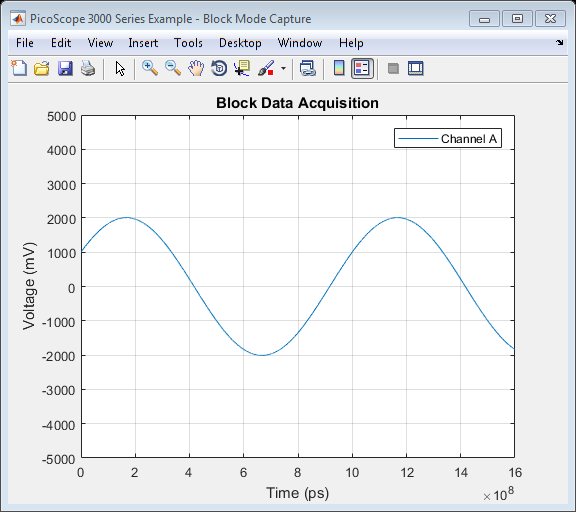

PicoScope 3000 Series Oscilloscope Block Data Capture Example
This is a MATLAB script that demonstrates how to use the ps3000 API library functions to capture a block of data from a PicoScope 3000 Series oscilloscope using the following approach:
- Open a unit
- Display unit information
- Set up an input channel
- Verify the timebase index
- Setup a trigger
- Collect a block of data
- Retrieve the data values and convert to millivolts
- Plot data
- Close the unit
To run this example:
Type PicoScope3000BlockExample at the MATLAB command prompt or run from the MATLAB Editor.
Copyright © 2017 Pico Technology Ltd. See LICENSE file for terms.
Contents
- Suggested Input Test Signals
- Clear Command Window and Close Any Figures
- Load Configuration Information
- Define any variables to be used throughout the script
- Load Libraries
- Open a Connection to a Device
- Display Unit Information
- Setup Channels
- Verify Timebase and Maximum Number of Samples
- Setup Trigger
- Data Collection
- Process Data
- Stop the Device
- Close the Connection to the Device
- Unload Libraries
Suggested Input Test Signals
This example was published using the following test signal(s):
- Channel A: 4 Vpp, 1 kHz sine wave
Clear Command Window and Close Any Figures
clc;
close all;
Load Configuration Information
PS3000Config;
Define any variables to be used throughout the script
channelA = ps3000Enuminfo.enPS3000Channel.PS3000_CHANNEL_A; chARange = ps3000Enuminfo.enPS3000Range.PS3000_5V; chARangeMv = PicoConstants.SCOPE_INPUT_RANGES(chARange + 1);
Load Libraries
Load the (lib)ps3000 shared library using the prototype file. The (lib)ps3000Wrap shared library is not required for block mode captures.
fprintf('PicoScope 3000 Series Block Example\n\n'); if (~libisloaded('ps3000')) if (ismac) loadlibrary('libps3000.dylib', @ps3000MFile, 'alias', 'ps3000'); elseif (isunix) loadlibrary('libps3000.so', @ps3000MFile, 'alias', 'ps3000'); elseif (ispc) loadlibrary('ps3000.dll', @ps3000MFile); else error('PicoScope3000BlockExample:OSNotSupported', 'Operating System not supported.'); end end
PicoScope 3000 Series Block Example
Open a Connection to a Device
unitHandle = calllib('ps3000', 'ps3000_open_unit'); if (unitHandle == 0) unloadlibrary('ps3000'); error('PicoScope3000BlockExample:OscilloscopeNotFound', 'No oscilloscope found.'); elseif (unitHandle == -1) unloadlibrary('ps3000'); error('PicoScope3000BlockExample:OscilloscopeFailedToOpen', 'Oscilloscope failed to open.'); end
Display Unit Information
disp('Unit Information:'); infoData = cell(6,1); for i = 0:5 infoString = blanks(40); stringLength = length(infoString); [~, infoData{i + 1}] = calllib('ps3000', 'ps3000_get_unit_info', unitHandle, infoString, stringLength, i); end disp(infoData);
Unit Information:
'3.9.0.6'
'2.0'
'8'
'3425'
'XFY08/034'
'15Jan09'
Setup Channels
enabled = 1; dc = 1; status.setChA = calllib('ps3000', 'ps3000_set_channel', unitHandle, channelA, enabled, dc, int16(chARange));
Verify Timebase and Maximum Number of Samples
Use the ps3000_get_timebase() function to query the driver as to the suitability of using a particular timebase index and the maximum number of samples available in the segment selected.
To use the fastest sampling interval possible, enable one channel and turn off any other channels.
Use a while loop to query the function until the status indicates that a valid timebase index has been selected. In this example, the timebase index of 4 is valid.
For further information on timebase indices, please refer to the Timebases section in the PicoScope 3000 Series PC Oscilloscopes Programmer's Guide.
% Set the number of samples to collect nSamples = 2000; timebaseIndex = 4; pTimeIntervalNs = libpointer('int32Ptr', 0); pTimeUnits = libpointer('int16Ptr', 0); oversample = 1; pMaxSamples = libpointer('int32Ptr', 0); status.getTimebase = 0; % If timebase is not valid, increment until a suitable timebase has been % found. while (status.getTimebase == 0) status.getTimebase = calllib('ps3000','ps3000_get_timebase', unitHandle, timebaseIndex, nSamples, ... pTimeIntervalNs, pTimeUnits, oversample, pMaxSamples); if (status.getTimebase == 1) break; else timebaseIndex = timebaseIndex + 1; end end timeIntervalNs = pTimeIntervalNs.Value; timeUnits = pTimeUnits.Value; maxSamples = pMaxSamples.Value; fprintf('Timebase: %d, time interval: %d ns, time units: %d, max samples: %d\n', timebaseIndex, timeIntervalNs, timeUnits, maxSamples);
Timebase: 4, time interval: 800 ns, time units: 1, max samples: 130559
Setup Trigger
Set a trigger for a rising edge through a 1 V threshold level on channel A. Set the device to automatically trigger after 1 second if the trigger condition has not been met in that time.
threshold = mv2adc(1000, chARangeMv, PS3000Constants.PS3000_MAX_VALUE); direction = ps3000Enuminfo.enPS3000TriggerDirection.PS3000_RISING; delay = 0.0; % Trigger event is the first data value in the block autoTrigMs = 1000; status.setTrigger2 = calllib('ps3000', 'ps3000_set_trigger2', unitHandle, channelA, ... threshold, direction, delay, autoTrigMs);
Data Collection
Collect data in block mode
pTimeIndisposedMs = libpointer('int32Ptr', 0); status.runBlock = calllib('ps3000', 'ps3000_run_block', unitHandle, nSamples, timebaseIndex, ... oversample, pTimeIndisposedMs); % Poll the driver until it indicates that the device has collected data. ready = 0; while (ready == 0) ready = calllib('ps3000', 'ps3000_ready', unitHandle); pause(0.01); end % Retrieve the data values % To define a buffer, first create an array and then create a libpointer % object. In this example, data will only be collected on channel A. pTimesBuffer = libpointer('int32Ptr', zeros(nSamples, 1, 'int32')); pDataBufferA = libpointer('int16Ptr', zeros(nSamples, 1, 'int16')); pOverflow = libpointer('int16Ptr', 0); numValues = calllib('ps3000', 'ps3000_get_times_and_values', unitHandle, pTimesBuffer, ... pDataBufferA, [], [], [], pOverflow, timeUnits, nSamples);
Process Data
Process data collected. In this example, the data is plotted.
if (numValues > 0) % Retrieve values and convert to millivolts if required dataBufferA = adc2mv(pDataBufferA.Value, PicoConstants.SCOPE_INPUT_RANGES(chARange + 1), PS3000Constants.PS3000_MAX_VALUE); figure1 = figure('Name','PicoScope 3000 Series Example - Block Mode Capture', ... 'NumberTitle', 'off'); % Channel A plot(pTimesBuffer.Value, dataBufferA); ylim([(-1 * chARangeMv) chARangeMv]); title('Block Data Acquisition', 'FontWeight', 'bold'); legend('Channel A'); % Set x-axis according to the time units returned switch (timeUnits) case ps3000Enuminfo.enPS3000TimeUnits.PS3000_FS xLabelStr = 'Time (fs)'; case ps3000Enuminfo.enPS3000TimeUnits.PS3000_PS xLabelStr = 'Time (ps)'; case ps3000Enuminfo.enPS3000TimeUnits.PS3000_NS xLabelStr = 'Time (ns)'; case ps3000Enuminfo.enPS3000TimeUnits.PS3000_US xLabelStr = 'Time (\mus)'; case ps3000Enuminfo.enPS3000TimeUnits.PS3000_MS xLabelStr = 'Time (ms)'; case ps3000Enuminfo.enPS3000TimeUnits.PS3000_S xLabelStr = 'Time (s)'; otherwise xLabelStr = 'Time (ns)'; end xlabel(xLabelStr); ylabel('Voltage (mV)'); grid on; else warning('PicoScope3000BlockExample:NoDataValuesReceived', 'No samples collected.'); end
Stop the Device
Ensure that the ps3000_stop() function is called at the end of data collection.
status.stop = calllib('ps3000', 'ps3000_stop', unitHandle);
Close the Connection to the Device
status.closeUnit = calllib('ps3000', 'ps3000_close_unit', unitHandle);
Unload Libraries
unloadlibrary('ps3000');